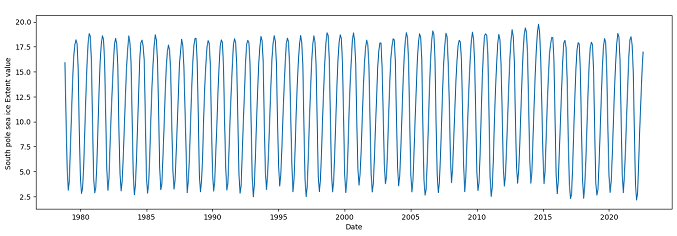
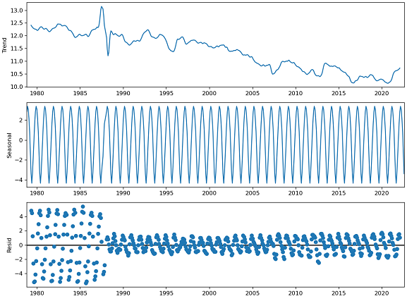
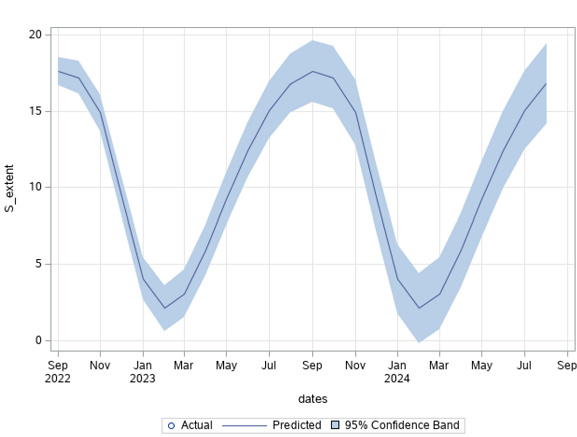
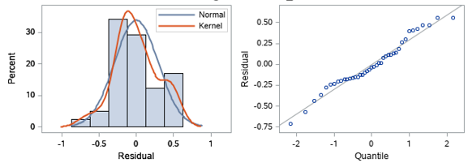

Statistical Data Analytics Case Study: Extent of Ice Flow Over Time
Introduction:
Sea ice extent is a measurement of the area of the ocean where ice covers at least 15 percent of the ocean surface, and sea
ice area only considers the parts of the ocean completely covered by ice (National Snow & Ice Data Center, n.d.). For
this case-study, the sea ice extent and area data for the north and south poles for each month have been acquired
separately from the National Snow & Ice Data Center website. Then they have been merged to a large csv data file
resulting in a time series dataset, which contains a total of 526 monthly observations of sea ice extent and area data from
November 1978 to August 2022. Then the time series data have been decomposed to its components, and regression
analyses have been conducted based on yearly and monthly movements in the sea ice extent value.
Data management:
Out of the 526 monthly observations, 3 had bad data points. To resolve that issue, the dataset has been sorted based on
the month number and then backward filling (Velicer & Colby, 2005) has been used to fill the bad data points in the
dataset. So, the data points from December 1988 were injected into the bad data points of December 1987. The year and
the month columns of the dataset have been merged to get the ‘dates’ column. That would be a helpful date-type
independent variable to analyze the time-series data. The dataset looks like this:
|
Figure 1: Snippet of the sea extent dataset.
|
Data visualization and seasonality:
To understand how the sea ice extent have been changing over the years, two separate plots have been generated with the N_extent and S_extent data.
|
Figure 2: Time series plot of North pole sea ice extent
|

Figure 3: Time series plot of South pole sea ice extent
|

Figure 4: Month-wise box-plot of North pole sea ice extent
|
Figure 5: Month-wise box-plot of South pole sea ice extent
|
Data decomposition:
We need to decompose these data further to visualize the basic elements of any time series, which are: Trend: A general, long-term, average tendency of the data to increase or decrease during the long time period. Seasonality: Variations in the time series in short term (seasonal variation) or the cyclical variations in the time series in long term (Cyclic Variations). Random or Irregular movements (Residuals): The pure irregular and random movement in the time series which is not explained by the trend.
|

Figure 6: Time series decomposition of North pole sea ice extent
|
Figure 7: Time series decomposition of South pole sea ice extent
|
Trend:
To analyze the time series data for increasing or decreasing trends, the Mann-Kendall Trend Test (sometimes called the MK test) has been performed. Mann-Kendall test works for all distributions and the time series data doesn't have to meet the assumption of normality (Mann, 1945; Kendall, 1955). For the time series on N_extent, the result of the Mann-Kendall Test with alpha=0.05 are: trend='decreasing', h=True (trend is present), p=2.51e-07 and slope=-0.00417. Also, the z (normalized test statistics), Tau (Kendall Tau) and s (Mann-Kendal's score) values are negative, which proves that N_extent has been declining as the time forwards. 3 On the contrary, the result of the Mann-Kendall Test on the S_extent with alpha=0.05 are: trend = 'no trend', h=False, p=0.511. The test didn’t show any trend in the S_extent time series. Also, augmented Dickey–Fuller test (ADF) tests (Dickey & Fuller, 1979) have been conducted for the stationary test, and the results signify that the mean and variance of N_extent vary largely over time while those of S_extent do not. In other words, N_extent time series is non-stationary and S_extent time series is stationary.
Regression analyses and forecasts:
Two regression models have been developed for each of the time series data, with year and month as the independent variables. For the yearly regressions, autoregressive integrated moving average (ARIMA) model (Box, Jenkins, & Bacon, 1967) has been followed as there are fewer observations. For the monthly regressions, exponential smoothing model (Crane & Crotty, 1967) has been followed which assigns exponentially decreasing weights as the observations get older.
|
Figure 8: Monthly regression of North pole sea ice extent
|
Figure 9: Yearly regression of North pole sea ice extent
|
|
Figure 10: Monthly forecast of North pole sea ice extent
|

Figure 11: Monthly forecast of South pole sea ice extent
|
|
Figure 12: Monthly regression of South pole sea ice extent
|
Figure 13: Yearly regression of South pole sea ice extent
|
|
Table 1: The fit statistics to evaluate the performance of the regression analyses
|
The residuals of the N_extent and S_extent data have also been diagnosed.
|

Figure 14: Residual data diagnostics of North pole sea ice extent
|

Figure 15: Residual data diagnostics of South pole sea ice extent
|
Conclusion:
In this case study, two time series data on sea ice extent in the North pole and the South pole have been analyzed. Then, yearly and monthly regression and forecast models have been developed. One interesting finding of this study is that there is clear evidence of shrinkage of the sea ice extent in the north pole, but no trend could be established with the sea ice extent in the south pole.
References:
Anderson, T. W. (2011). The statistical analysis of time series. John Wiley & Sons.
Applied Time Series Analysis. (n.d.). Retrieved from Penn State University: https://online.stat.psu.edu/stat510/lesson/5/5.1
Box, G. E., Jenkins, G. M., & Bacon, D. W. (1967). Models for Forecasting Seasonal and Non-seasonal Time Series. . Wisconsin Univ Madison Dept of Statistics.
Crane, D. B., & Crotty, J. R. (1967). A two-stage forecasting model: Exponential smoothing and multiple regression. Management Science, 13(8), B-501.
Dickey, D. A., & Fuller, W. A. (1979). Distribution of the estimators for autoregressive time series with a unit root. Journal of the American statistical association, 74(366a), 427-431.
Kendall, M. (1955.). Rank Correlation Methods. Griffin, London.
Mann, H. (1945. ). Nonparametric tests against trend. Econometrica, 13, 245-259.
National Snow & Ice Data Center. (n.d.). Retrieved from http://nsidc.org/arcticseaicenews/
Velicer, W. F., & Colby, S. M. (2005). A comparison of missing-data procedures for ARIMA time-series analysis. Educational and Psychological Measurement, 65(4), 596-615.
Link to the Github repository